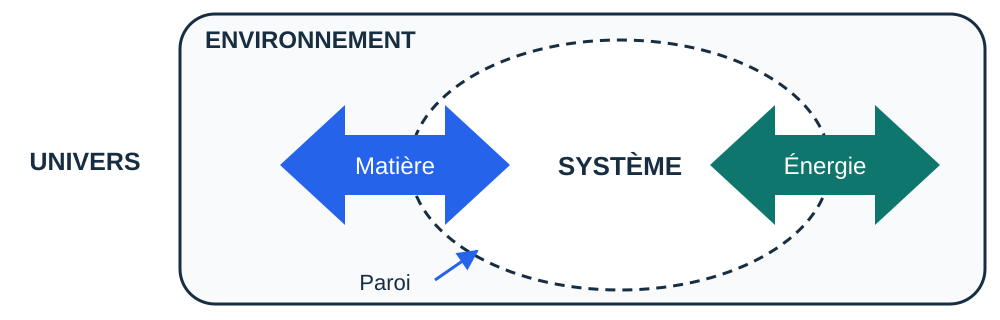
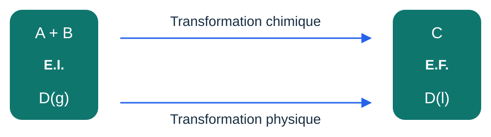

PARTIE 1 / 6
Introduction à la thermochimie
Décrire un système et ses échanges.
Pourquoi étudier la thermodynamique ?
Comment décrire l’évolution d’un système lors d’une transformation physique, comme un changement d’état, ou d’une transformation chimique, où des réactifs se transforment en produits ? Quels échanges d’énergie accompagnent ces transformations et comment les quantifier ?
La thermodynamique fournit les grandeurs et les relations permettant d’établir les bilans énergétiques, de déterminer le sens d’évolution possible et de caractériser les états d’équilibre d’un système. La vitesse des réactions et leur évolution au cours du temps relèvent de la cinétique chimique.
Les potentiels thermodynamiques sont des outils pour établir les bilans énergétiques et, selon les conditions imposées, déterminer le sens d’évolution d’un système et son état d’équilibre.
Définir le système étudié
Système thermodynamique
Portion étudiée délimitée par une frontière (réelle ou imaginaire) appelée paroi, qui la sépare de son environnement (milieu extérieur).
Univers thermodynamique : environnement + système en interaction.

Système physico-chimique
Ensemble de constituants physico-chimiques susceptibles d’évoluer par transformation physique (changement d’état) ou transformation chimique (réaction chimique).
Un constituant chimique est une espèce chimique : atome, molécule ou ion. Un constituant physico-chimique est une espèce chimique dans un état donné : liquide, solide, gaz ou dissous.

Système ouvert, fermé ou isolé
Système ouvert
Échange possible de matière et d’énergie avec l’extérieur.
Système fermé
Pas d’échange de matière, mais transfert d’énergie possible avec l’extérieur.
Système isolé
Ni échange de matière ni transfert d’énergie avec l’extérieur.
Retrouver les échanges sur le schéma
Choisissez un type de système pour faire apparaître les échanges possibles.
Ouvert : échanges possibles de matière et d’énergie.
Le thermos représente un système isolé idéal. Les flèches indiquent les échanges possibles, dans les deux sens.
État du système et paramètres de description
L’état du système est sa description à un instant donné : température, pression, volume, composition et phases présentes, par exemple. Ces grandeurs ne sont pas toutes indépendantes ; les relations entre elles dépendent du système considéré.
Paramètres extensifs
Proportionnels à la quantité de matière du système. Ils sont additifs lors de la réunion de deux systèmes : masse m, volume V, quantité de matière n.
Paramètres intensifs
Indépendants de la quantité de matière du système. Ils ne sont pas additifs lors de la réunion de deux systèmes : température T, pression p, concentration C, fraction molaire x.
| Grandeur | Unité |
|---|---|
| Température T | K |
| Pression p | Pa |
| Volume V | m³ ; 1 L = 10⁻³ m³ |
| Quantité de matière n | mol |
| Fraction molaire x | Sans unité |
| Concentration C | mol·m⁻³ ou mol·L⁻¹ |
| Masse m | kg |
Quantités de matière et unités
Avant le bilan énergétique, déterminez les quantités de matière et écrivez l’équation équilibrée.
| À déterminer | Relation et unités |
|---|---|
| Quantité de matière | n = m/M ; n en mol, m et M dans des unités de masse cohérentes. Pour une solution : n = cV, avec V en L si c est en mol·L⁻¹. |
| Masse d’un liquide | m = ρV ; utiliser les unités de volume de la masse volumique ρ. |
| Gaz parfait | pV = nRT ; T en K, p en Pa et V en m³ avec R = 8,314 J·mol⁻¹·K⁻¹. Si le volume molaire est donné : V = nVm. |
| Conversions | T/K = θ/°C + 273,15 ; 1 bar = 10⁵ Pa ; 1 L = 10⁻³ m³ ; 1 bar·L = 100 J. |
| Mélange gazeux idéal | ntot = ∑ nᵢ ; xᵢ = nᵢ/ntot ; pᵢ = xᵢp. Les pressions partielles s’additionnent pour donner p. |
Fonctions d’état et potentiels thermodynamiques
Fonction d’état
Une fonction d’état dépend uniquement de l’état du système : sa variation entre un état initial et un état final ne dépend pas du chemin suivi.
Une fonction d’état n’est pas nécessairement constante : sa valeur peut changer lorsque l’état du système change.
Pour décrire les transformations d’un système, la thermodynamique utilise notamment des grandeurs énergétiques appelées potentiels thermodynamiques.
Potentiel thermodynamique
Un potentiel thermodynamique est une fonction d’état ayant la dimension d’une énergie. Selon les contraintes imposées au système, il permet d’établir des relations énergétiques et de caractériser son équilibre.
Il existe quatre potentiels thermodynamiques classiques. Nous en étudierons deux ici. Ils nous permettront de comprendre et de calculer les échanges d’énergie associés aux réactions chimiques et aux changements d’état.
Référence scientifique
La définition proposée est une reformulation pédagogique. Le cadre des potentiels thermodynamiques est développé dans le rapport technique de l’IUPAC de R. A. Alberty (2001). Ce texte avancé n’est pas une lecture nécessaire pour suivre le parcours.
Thermochimie · Lénaïc Lartigue · Introduction à la thermochimie · CC BY-NC-ND 4.0
6 questions de compréhension
Ces questions reprennent les définitions et les relations. Vous pouvez recommencer.
Exercices
Après le QCM, construisez votre raisonnement sur votre brouillon, puis saisissez les résultats demandés. Les étapes du calcul figurent dans la correction détaillée, consultable après une tentative.
Vos réponses sont conservées dans ce navigateur. Ce suivi est un repère de travail, pas une note.
EXERCICE 1
Compléter les définitions
Associez chaque définition à son terme.
Indice 1
Relisez les trois définitions de système, puis celles des paramètres extensifs et intensifs.
Correction
1. Ouvert. 2. Fermé. 3. Isolé. 4. Extensif. 5. Intensif.
EXERCICE 2
Reconnaître les paramètres
Pour chaque grandeur, indiquez si elle est extensive ou intensive.
Indice 1
Pensez à la réunion de deux portions identiques.
Correction
V est extensif ; T et p sont intensifs.
EXERCICE 3
Préparer les unités d’un bilan
On dispose de 180 g d’eau, de masse molaire 18 g·mol⁻¹. La température est de 25 °C et la pression de 1 bar.
Indice 1
Vérifiez les unités avant le bilan.
Correction
n = 180/18 = 10 mol ; T = 25 + 273,15 = 298,15 K ; p = 100 000 Pa.
Discussion · Introduction à la thermochimie
Posez votre question et décrivez le raisonnement qui vous pose problème. Les échanges sont publics.
Vous pouvez aussi poser vos questions par mail ou pendant une séance à distance.